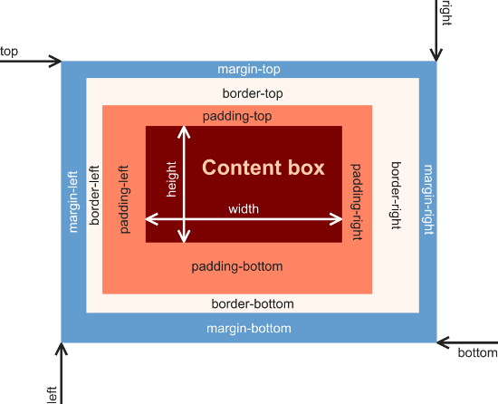
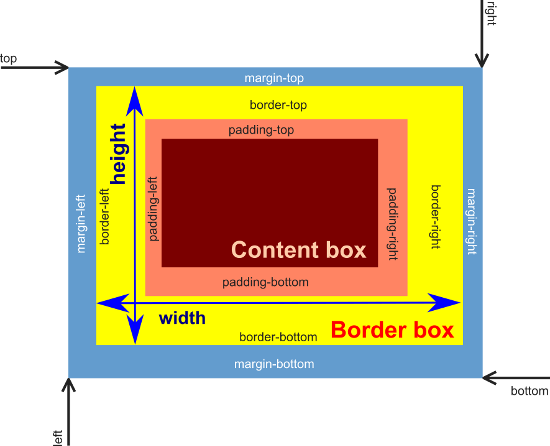

Das Box-Modell
Ein HTML-Dokument wird in rechteckige Bereiche eingeteilt. Diese rechteckigen Bereichen (Boxes) lassen sich mit Hilfe von CSS formatieren. Der Aufbau einer Box wird in CSS durch das Box-Modell definiert.
Das klassische W3C Box-Modell
Ausgangspunkt für das klassische W3C-konforme Box-Modell ist die Größe des Inhalts-Fensters (der Content-Box). Möchte man die Gesamtgröße der dargestellten Box berechnen, muss man die Größe des Innenabstands (padding), des Rahmens (border) und des Außenabstands (margin) zur Größe der Content-Box addieren.
Die Größe der Content-Box wird mit width und ggf. height vorgegeben.

Beispiel für die Formatierung einer CSS-Box
footer {
width: 100%;
margin-left: auto;
margin-right: auto;
margin-top: 1.5em;
margin-bottom: 1.5em;
padding: 1em;
}
Das alternative Border-Box-Modell
Das klassische Content-Box-Modell macht es manchmal schwierig, Boxen pixelgenau zu definieren.
Daher hat man das alternative Border-Box-Modell eingeführt, bei dem die Größe der Border-Box wird mit width und ggf. height vorgegeben wird.
Dies bringt Vorteile beim pixelgenauen Positionieren von Boxen mit relativen Größenangaben.

Umschalten zwischen den Box-Modellen
Die box-sizing Eigenschaft (Link zur W3C Spezifikation) in CSS gibt an, welches Box-Modell gelten werden soll.
box-sizing: border-box; /* alternatives Box-Modell (Border-Box-Modell) */ box-sizing: content-box; /* klassisches W3C Modell (Content-Box-Modell) */
Der besseren Übersichtlichkeit wegen, sollte man innerhalb eines HTML-Dokuments nur ein Modell verwenden.
Der inzwischen veraltete IE5 bzw. IE5.5 verwendet immer das Border-Box-Modell.